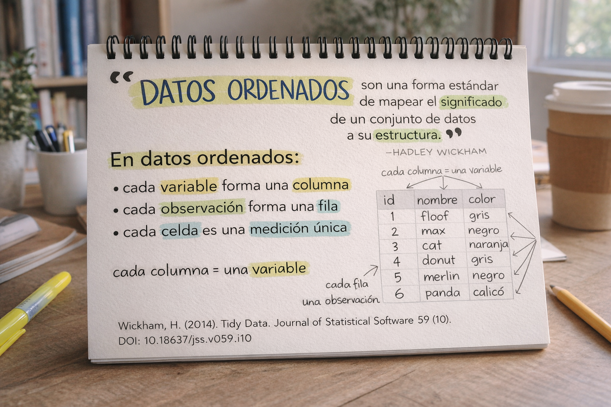

# Texto (character)
"cusco"[1] "cusco"" Cusco"[1] " Cusco"# Números (numeric)
1[1] 11.2[1] 1.2# Lógicos (logical)
TRUE[1] TRUEFALSE[1] FALSESesión 1: Fundamentos de R y RStudio
Aprendizaje
data/Haciendo Ciencia de Datos
Al final de este curso, serás capaz de…


Fuente: Modern Dive.
Abre RStudio y exploraremos juntos:

Los elementos básicos de R:
# Texto (character)
"cusco"[1] "cusco"" Cusco"[1] " Cusco"# Números (numeric)
1[1] 11.2[1] 1.2# Lógicos (logical)
TRUE[1] TRUEFALSE[1] FALSEEl operador usado para crear objetos es <-
# Crear objetos
x <- 1
x[1] 1y <- "ser"
y[1] "ser"En RStudio: Alt + - (Windows) o Option + - (Mac)
Para almacenar más de un elemento usamos c():
# Vector numérico
x <- c(1, 2, 3, 4, 5)
x[1] 1 2 3 4 5# Vector de caracteres
ciudades <- c("Lima", "Cusco", "Arequipa", "Trujillo")
ciudades[1] "Lima" "Cusco" "Arequipa" "Trujillo":1:6[1] 1 2 3 4 5 610:15[1] 10 11 12 13 14 15[]letters[1:5][1] "a" "b" "c" "d" "e"letters[c(2, 4, 6)][1] "b" "d" "f"ciudades[1][1] "Lima"| Operador | Significado | Ejemplo |
|---|---|---|
x < y |
menor que | 5 < 10 |
x > y |
mayor que | 10 > 5 |
x == y |
igual | 5 == 5 |
x <= y |
menor igual | 5 <= 5 |
x >= y |
mayor igual | 10 >= 5 |
x != y |
diferente | 5 != 10 |
x %in% y |
pertenece | "Lima" %in% ciudades |
# Comparaciones
5 < 10[1] TRUE10 > 5[1] TRUE5 == 5[1] TRUE# Pertenencia
"Lima" %in% ciudades[1] TRUE"Piura" %in% ciudades[1] FALSE# Y (ambas condiciones deben ser verdaderas)
TRUE & TRUE[1] TRUETRUE & FALSE[1] FALSE# O (al menos una debe ser verdadera)
TRUE | FALSE[1] TRUEFALSE | FALSE[1] FALSE# Negación
!TRUE[1] FALSE# Vector numérico entero
x <- c(1:6)
class(x)[1] "integer"# Vector de caracteres
x <- c("a", "e", "i", "o", "u")
class(x)[1] "character"# Vector lógico
x <- c(TRUE, TRUE, FALSE, TRUE, FALSE)
class(x)[1] "logical"# Matriz de números
matrix(1:10, ncol = 5) [,1] [,2] [,3] [,4] [,5]
[1,] 1 3 5 7 9
[2,] 2 4 6 8 10# Matriz de letras
matrix(letters[1:15], nrow = 3) [,1] [,2] [,3] [,4] [,5]
[1,] "a" "d" "g" "j" "m"
[2,] "b" "e" "h" "k" "n"
[3,] "c" "f" "i" "l" "o" Los data frames son la estructura más importante para análisis de datos:
# Ejemplo con datos incluidos en R
head(mtcars, 3) mpg cyl disp hp drat wt qsec vs am gear carb
Mazda RX4 21.0 6 160 110 3.90 2.620 16.46 0 1 4 4
Mazda RX4 Wag 21.0 6 160 110 3.90 2.875 17.02 0 1 4 4
Datsun 710 22.8 4 108 93 3.85 2.320 18.61 1 1 4 1
Tibbles son data frames “mejorados” del tidyverse:
# Convertir a tibble
as_tibble(mtcars)# A tibble: 32 × 11
mpg cyl disp hp drat wt qsec vs am gear carb
<dbl> <dbl> <dbl> <dbl> <dbl> <dbl> <dbl> <dbl> <dbl> <dbl> <dbl>
1 21 6 160 110 3.9 2.62 16.5 0 1 4 4
2 21 6 160 110 3.9 2.88 17.0 0 1 4 4
3 22.8 4 108 93 3.85 2.32 18.6 1 1 4 1
4 21.4 6 258 110 3.08 3.22 19.4 1 0 3 1
5 18.7 8 360 175 3.15 3.44 17.0 0 0 3 2
6 18.1 6 225 105 2.76 3.46 20.2 1 0 3 1
7 14.3 8 360 245 3.21 3.57 15.8 0 0 3 4
8 24.4 4 147. 62 3.69 3.19 20 1 0 4 2
9 22.8 4 141. 95 3.92 3.15 22.9 1 0 4 2
10 19.2 6 168. 123 3.92 3.44 18.3 1 0 4 4
# ℹ 22 more rowsLas listas pueden contener elementos de diferentes tipos:
# Lista simple
list(
numeros = 1:5,
letras = c("a", "b", "c"),
logico = TRUE
)$numeros
[1] 1 2 3 4 5
$letras
[1] "a" "b" "c"
$logico
[1] TRUELas funciones son (más a menudo) verbos, seguidos por lo que se aplicarán entre paréntesis:
haz_esto(a_esto)
haz_eso(a_esto, a_eso, con_aquellos)nombre_funcion(argumento1, argumento2, ...)
# Función mean (promedio)
x <- c(1, 2, 3, 4, 5, 6, 7, 8, 9, 100)
mean(x)[1] 14.5# Con argumento adicional
mean(x, trim = 0.1)[1] 5.5La documentación se accede con ?:
?mean
help(sum)# Longitud de un vector
length(ciudades)[1] 4# Valores únicos
unique(c(1, 2, 2, 3, 3, 3))[1] 1 2 3# Resumen estadístico
summary(mtcars$mpg) Min. 1st Qu. Median Mean 3rd Qu. Max.
10.40 15.43 19.20 20.09 22.80 33.90 # Combinar vectores
c(1:3, 10:12)[1] 1 2 3 10 11 12# Secuencias
seq(from = 0, to = 10, by = 2)[1] 0 2 4 6 8 10# Repetición
rep("R", times = 3)[1] "R" "R" "R"install.packages() - pak::pak(), una vez por sistema:install.packages("tidyverse")
library(pak)
pak::pkg_install("sf"). . .
library(), una vez por sesión:library(tidyverse)
library(sf)
# Tidyverse y manipulación
install.packages("tidyverse")
install.packages("janitor")
install.packages("here")
# Lectura de datos
install.packages("readxl")
install.packages("writexl")
# Datos espaciales
install.packages("sf")library(readr)
# CSV
datos <- read_csv("data/mi_archivo.csv")
# Excel
library(readxl)
datos <- read_excel("data/mi_archivo.xlsx")# Ver primeras filas
head(datos)
# Ver estructura
str(datos)
glimpse(datos) # tidyverse
# Ver nombres de variables
names(datos)library(tidyverse)
library(readxl)
library(janitor)
# Importar datos
anp <- read_excel("data/areas_naturales_peru.xlsx", skip = 1)
# Limpiar nombres
anp <- anp |> clean_names()
# Ver estructura
glimpse(anp)|>El operador pipe permite encadenar operaciones:
# Sin pipe
datos_limpios <- clean_names(datos)
datos_filtrados <- filter(datos_limpios, condicion)
# Con pipe
datos_final <- datos |>
clean_names() |>
filter(condicion)Ctrl + Shift + M (Windows) o Cmd + Shift + M (Mac)
# Ver primeras filas después de limpiar nombres
anp |>
clean_names() |>
head()
# Encadenar múltiples operaciones
anp |>
clean_names() |>
select(categoria, nombre_area, extension_ha) |>
head()


---
title: "Mi Análisis"
format: html
---
## Introducción
Este es un análisis de datos de áreas naturales.
```{r}
library(tidyverse)
anp <- read_csv("data/areas_naturales.csv")
summary(anp)
```mtcars (viene incluido en R)mpgreadxlhead() y glimpse() para explorarlojanitor::clean_names()<-|>Para la próxima sesión:
data/
. . .